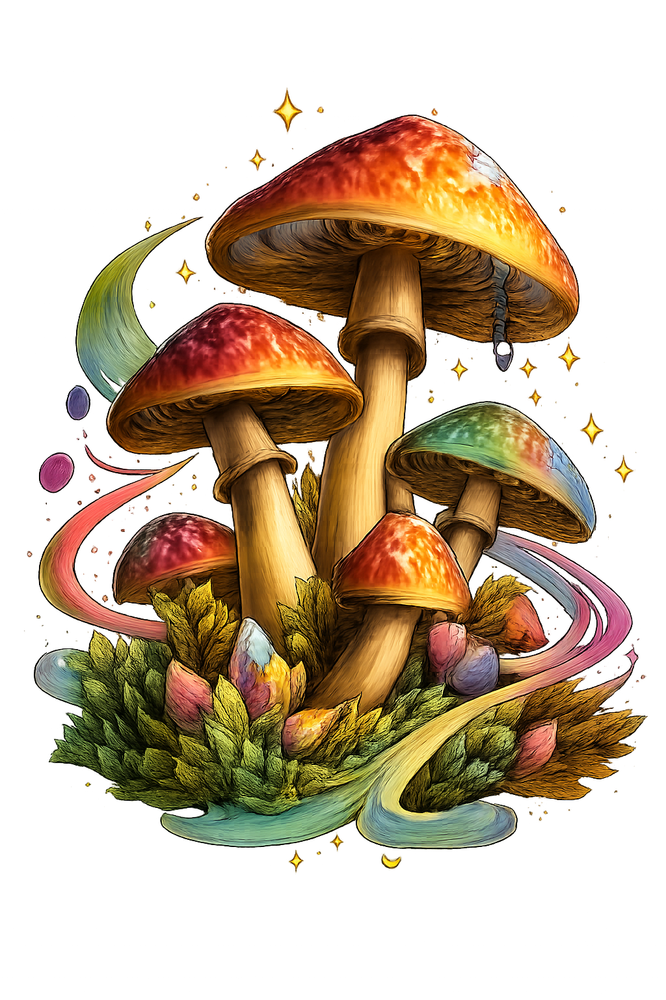

Breaking News
Psilocybin: Why So Many Successful People Are Suddenly "Very Into Mushrooms"
The Stoned Ape Theory, popularized by ethnobotanist Terence McKenna, suggests that human intelligence did not emerge from careful planning, but from a long lineage of primates who occasionally said, "I wonder what happens if I eat that."
According to the theory, early humans migrating into grasslands encountered psilocybin mushrooms growing conveniently in animal dung—nature's way of offering a cognitive upgrade with absolutely no instruction manual. What followed was not immediate enlightenment, but a slow realization that reality had layers, and some of them were extremely interesting.
Science
Study Confirms: Low Dose Makes You Better At Hunting, High Dose Makes You Question Everything
McKenna argued that at low doses, psilocybin enhanced visual acuity, making hunters better at spotting movement, patterns, and possibly destiny. At moderate doses, it increased sociability and sexual activity, leading to stronger group bonds and a vague sense that love, actually, might be the point.
At higher doses, it dissolved the ego entirely—an experience that researchers believe directly contributed to language, art, religion, and the first time someone said, "No, listen, this is important."
Video
Watch: McKenna on Consciousness
Profile
Terence McKenna: The Man Who Made "Eat Weird Mushrooms" Sound Like Philosophy

Terence Kemp McKenna (1946-2000) was an American ethnobotanist who somehow convinced thousands of people that eating fungus from cow dung was the key to understanding the universe. Remarkably, he may have been right.
Known for his ability to make sentences like "the felt presence of immediate experience" sound profound rather than confusing, McKenna spent decades arguing that plants were smarter than humans and that history was heading somewhere specific. When asked where, he would usually smile and say something that required three hours to unpack.
Opinion
Local Man Reports He Has "Figured It Out" After Mushroom Trip, Cannot Explain What "It" Is
Modern humans, facing far fewer mammoths but significantly more emails, appear to be revisiting this ancient strategy. Increasing numbers of people report that after taking mushrooms they have "figured it out," though what "it" is remains unclear and usually takes several hours to explain.
"No, you don't understand," said one Silicon Valley executive, gesturing at nothing in particular. "Everything is connected. The trees. The code. My calendar invites. It's all... it's all the same thing." He then requested 45 minutes of uninterrupted silence to "integrate."
Investigation
Psilocybe Cubensis: The Mushroom That Grows In Poop And Somehow Became A Spiritual Teacher

Psilocybe cubensis, the "magic mushroom" central to McKenna's theory, grows primarily in cattle dung—a detail that enthusiasts tend to mention only after explaining the profound cosmic insights it provides.
Recent studies at Johns Hopkins and Imperial College London have confirmed that psilocybin can produce lasting positive changes in personality and reduce anxiety. Participants rated their experiences "among the most meaningful of their lives," narrowly beating out "birth of first child" and "that one sunset in Portugal."
Editorial
Scientists Remain Cautious. Historians Remain Amused. The Ape Keeps Chewing.
The scientific community has approached the Stoned Ape Theory with the same enthusiasm they reserve for most ideas involving the phrase "what if drugs, but evolution." Which is to say: polite skepticism and a quietly growing stack of research papers.
Meanwhile, historians note that humans have been finding creative ways to alter their consciousness since approximately five minutes after becoming conscious. And somewhere on the African savanna, an ape is still chewing thoughtfully on something it found in the grass, wondering why everyone else stopped.
Watch
The Mushroom Speaks: A Visual Journey
Sometimes the message arrives not in words, but in images. The ancient wisdom of the fungi, visualized for modern minds who prefer their enlightenment in vertical video format.